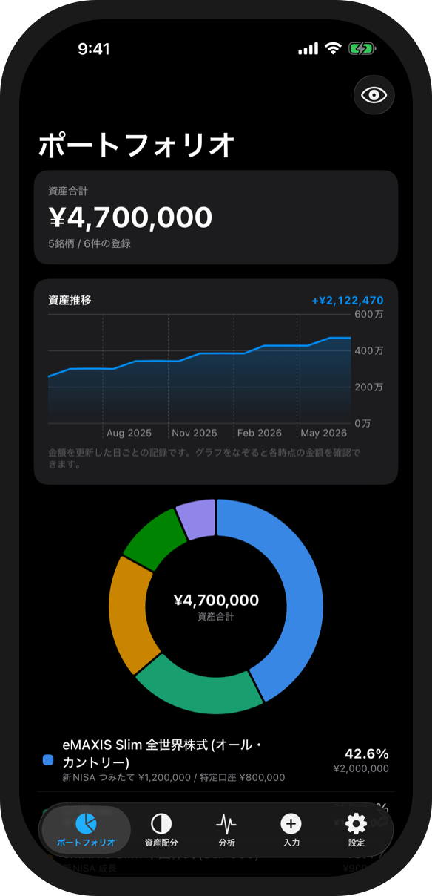
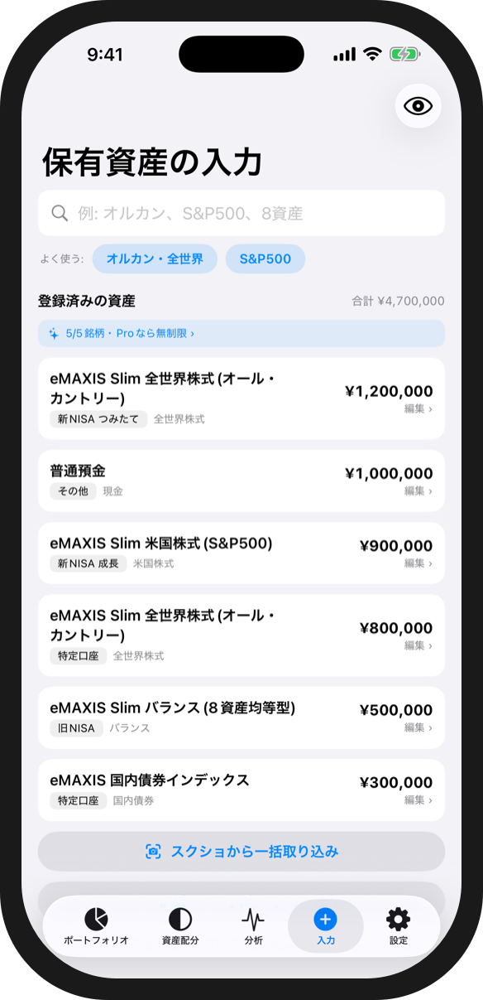
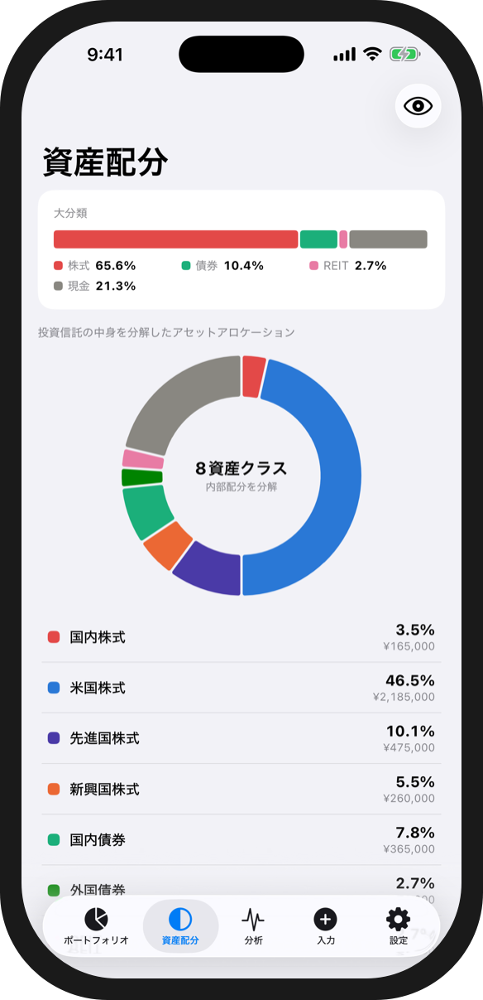
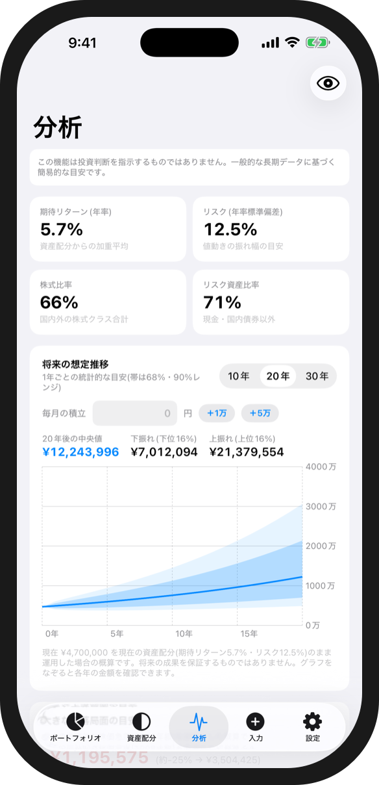

新NISAも、特定口座も、iDeCoも。
口座ごとにバラバラのままでは、
本当の配分は見えてこない。
アセロケ でまとめよう。
散らばった投資をひとつのポートフォリオに。シンプルな資産配分アプリ。


新NISAも、特定口座も、iDeCoも。
口座ごとにバラバラのままでは、
本当の配分は見えてこない。
散らばった投資をひとつのポートフォリオに。シンプルな資産配分アプリ。

口座連携も、ログインも、いらない。
資産配分を知るための3つの機能。
家計簿アプリや証券会社の「保有商品一覧」のスクリーンショットから、銘柄名と評価額を自動で読み取り。毎月の更新も取り込み直すだけ。※読み取りは完璧ではありません。登録前に確認・修正できます。

バランス型や全世界株式など、投資信託の中身まで分解して集計。口座をまたいだ同一銘柄は自動で合算され、資産全体のアセットアロケーションがひと目でわかる。

目標配分とのズレ、リバランスの試算、将来の資産推移の予測まで。データはすべて端末の中だけ。外部に送信されることはない。

すべてお使いの端末の中にのみ保存されます。ログインや口座連携は不要で、入力内容やスクリーンショットが外部に送信されることはありません。
読み取りは完璧ではなく、画像によっては読み取れない・誤って読み取ることがあります。取り込み画面で内容を確認・修正のうえ登録してください。読み取れなかった商品は、検索または手動追加でも登録できます。
設定タブの「バックアップ書き出し」でJSONファイルとして保存し、新しい端末の「復元」から読み込んでください。
すべての機能を無料で使えます(登録は5銘柄まで)。買い切りのProにアップグレードすると、銘柄数の上限がなくなります。
設定タブの「購入を復元する」をタップしてください。同じApple IDであれば引き継がれます。